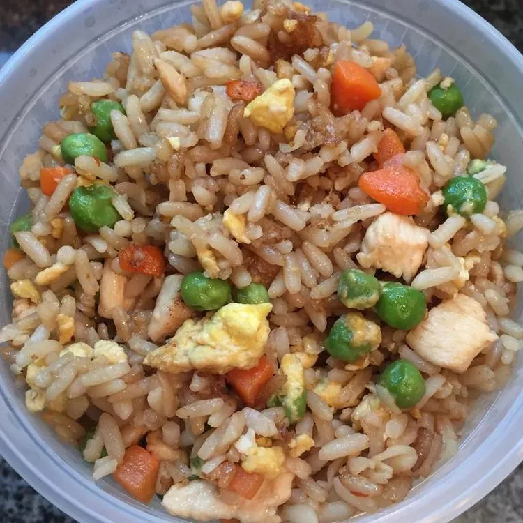

Fried rice is a traditional Chinese preparation
of cooked rice, vegetables, protein, soy sauce, and aromatics.
Ingredients
⅔ cup chopped baby carrots
½ cup frozen green peas
1 clove garlic, minced, or to taste (Optional)
2 large eggs
3 cups leftover cooked white rice
1 tablespoon soy sauce, or more to taste
2 teaspoons sesame oil, or to taste
Steps
Place carrots in a small saucepan and cover with water.
Bring to a low boil and cook for 3 to 5 minutes. Stir in peas,
then immediately drain in a colander.
Heat a wok over high heat. Pour in vegetable oil,
then stir in carrots, peas, and garlic; cook for about 30 seconds.
Add eggs; stir quickly to scramble eggs with vegetables.
Stir in cooked rice. Add soy sauce and toss rice to coat. Drizzle with sesame oil and toss again.